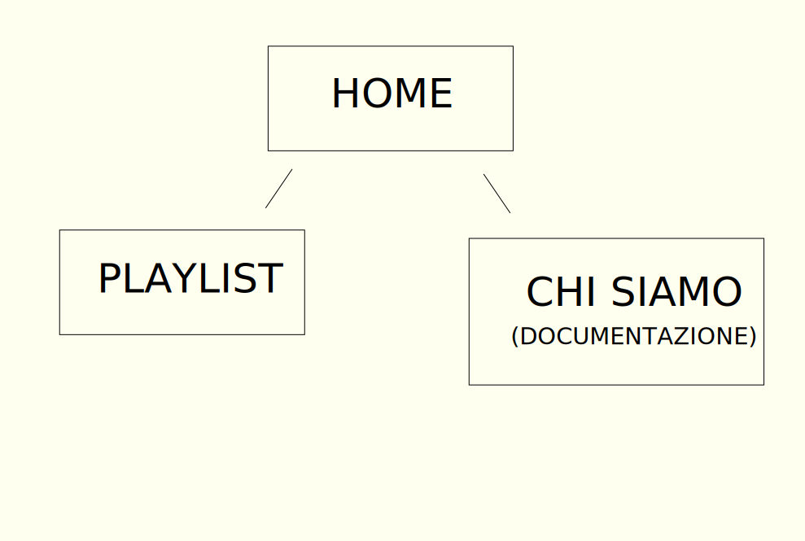

Abstract:
VerniJazz, come già suggerito dal titolo, nasce dalla comune volontà di esporre l'arte e la cultura Jazz. In un'epoca caratterizzata da un livellamento musicale, abbiamo sentito l'esigenza di diffondere quest'importante segmento artistico e avvicinare nuovi, curiosi, uditori. Ciò è possibile grazie alla comoda fruizione delle playlist affiancate dalle didascalie per garantire la contestualizzazione dell'ascolto. Il nome nasce dalla fusione del termine Jazz con quello francese Vernissage, che sta ad indicare il corrispettivo italiano della Vernice, ossia una mostra inaugurale, spesso d'arte pittorica. Vernijazz si propone di inaugurare una mostra retrospettiva sul Jazz.
Project Management Plan
Benchmarking
Obiettivi:
◆Rompere il luogocomune che definisce il jazz un genere elitario.
◆Permettere all'utente di storicizzare ciò che ascolta.
Target Utente:
Appassionati di musica e storia che vogliono approfondire l'evoluzione dei movimenti jazzistici
Competitors:
Jazz nella storia:
Anche questo sito si presenta come una contestualizzazione della cultura Jazz; condivide con 'VerniJazz' l'ancoraggio a riferimenti musicali e sottotesti. Si differenzia in quanto esso non vuole descrivere ed analizzare l'evoluzione del genere attraverso assonanze e divergenze tra i vari movimenti. Il target utente può ritenersi similare, ma l'approccio è generalista. I colori dominanti sono il nero e il rosso, i quali causano una lettura leggermente affaticante.
I-Jazz:
Si propone come un portale in cui i musicisti jazz si raccontano. I colori utilizzati come sfondo sono tendenzialmente chiari, somiglianza stilistica condivisa da Vernijazz. In realtà abbiamo trovato estrema difficoltà a rintracciare dei veri i propri competitors, in quanto la maggior parte dei siti presenti sul web jazz-tematici, si proiettano verso eventi futuri e musicisti presenti.
Struttura e layout
Architettura del sito:
Wireframe:

Scelte Grafiche:
FONT: Libreria font utilizzata = Google Font.
Source Serif Pro, serif.
Obiettivo: simulare una grafia retrò.Fira Sans, sans serif.
Utilizzata per la nav bar e alcuni titoli per rendere la lettura più visbile e semplice.
Palette Cromatica:
#FFFFF0: avorio.
#330066: viola.
#FF0000: rosso
Abbiamo selezionato il colore 'avorio' per garantire una lettura confortevole, riposante per gli occhi; il colore 'viola' simboleggia nella cultura cristiana il passaggio dalla condizione schiavile a libera, sotteso anche il riferimento al film di Steven Spielberg, appunto 'Il Colore Viola'.
Peculiarità Stilistiche:
Abbiamo voluto creare un'esperienza utente facile ed intuitiva, ricercando accuratamente i dettagli stilistici che riuscissero a catturare l'attenzione anche ai non esperti. Abbiamo preferito un'impaginazione iniziale non troppo ricca di dettagli, in modo tale da accompagnare l'utente nella scoperta della piattaforma. Non abbiamo riservato una sezione specifica agli artisti, in quanto nel mondo jazz non esiste l'idolatria della rock o pop star; ciò nonostante abbiamo optato per inserire le firme degli artisti più conosciuti con corrispettivo link alle pagine di wikipedia, in modo tale che i visitatori potessero esaudire qualsiasi spiraglio di curiosità. Abbiamo mantenuto i medesimi colori alternandoli per garantire familiarità ma non monotonia.
Linguaggi e Strumenti:
HTML: struttura del sito.
CSS: grafica sito
JQUERY: menù a tendina
ADOBE ILLUSTRATOR: logo, bozze, firme, grafica degli elementi
Communication Strategy
Background
Abbiamo constatato che non sono presenti concreti competitors di Vernijazz. Molti dei siti da noi esaminati si sono rivelati eccessivamente generalisti con una scarsa attenzione all’esperienza utente, peccando di accuratezza stilistica. Le piattaforme streaming audio, attualmente, non forniscono dettagli sul contesto storico e culturale delle tracce, nè sullo stile musicale adottato nei singoli brani dagli artisti. Tuttavia è possibile rintracciare un'interesse crescente dell'utenza verso la contestualizzazione delle tracce al momento dell'ascolto nelle varie piattaforme. Spotify, ad esempio, sta iniziando a integrare singoli aneddoti su particolari tracce d'interesse storico. D'altra parte, un progetto più ridotto e specifico come Vernijazz rappresenterebbe una lente d'ingrandimento adeguata per interagire con i singoli generi musicali, in questo caso il Jazz. Siti specifici che si occupano di Jazz sono spesso siti web di riviste sul Jazz o siti di divulgazione culturale Jazz, che non forniscono quindi uno specchietto della storia del genere, ma sono principalmente imperniati sul presente.
Obiettivi comunicativi
Il nostro obiettivo era garantire una maggiore familiarizzazione e arricchimento culturale dell'utente target. Responsabilizzare gli ascoltatori garantendo un accrescimento consapevole sugli avvenimenti trascorsi nelle varie decadi del '900, accompagnati da uno dei più importanti patrimoni artistici moderni, il quale ha segnato la musica extra-colta che noi tutti conosciamo. Ovviamente sempre rispettando i nostri limiti e quelli della piattaforma, snellendo e rendendo interattivo ciò che troppo spesso viene stigmatizzato come obsoleto e noioso, specialmente dal giovane pubblico, di cui noi facciamo parte.
Gli obiettivi prefissati sono:
Raggiungere almeno 50 visite.
Almeno 15 interazioni nei social network
Target audience e messaggio
Vernijazz si rivolge ad intraprendenti e appassionati ascoltatori di musica, senza escludere i neofiti o semplicemente coloro che vogliono approndire il Jazz.
Ciò a cui tenevamo particolarmente era rompere la ridondanza delle canzonette più diffuse e commerciali, far emergere la dialettica ed i contrasti soggiacenti a quest'arte; la sofferenza, la bellezza, i blues, il suono a cui certe esistenze devono far fronte.
Riteniamo sia essenziale una maggior presa di coscienza sul ruolo benefico e liberatorio dell'estetica, del ruolo essenziale della bellezza nella nostra vita individuale e sociale, e di come essa possa divenire un mezzo per uscire da noi stessi e scoprire l'altro da sé.
Il Jazz è improvvisazione e cooperazione, è il concatenarsi delle differenze che riescono ad armonizzarsi tra di loro; il Jazz è il suono del reale, stracolmo di contraddizioni, e come tale necessita la sua diffusione.
Promozione
Instagram.
Gruppi Telegram e Whatsapp.